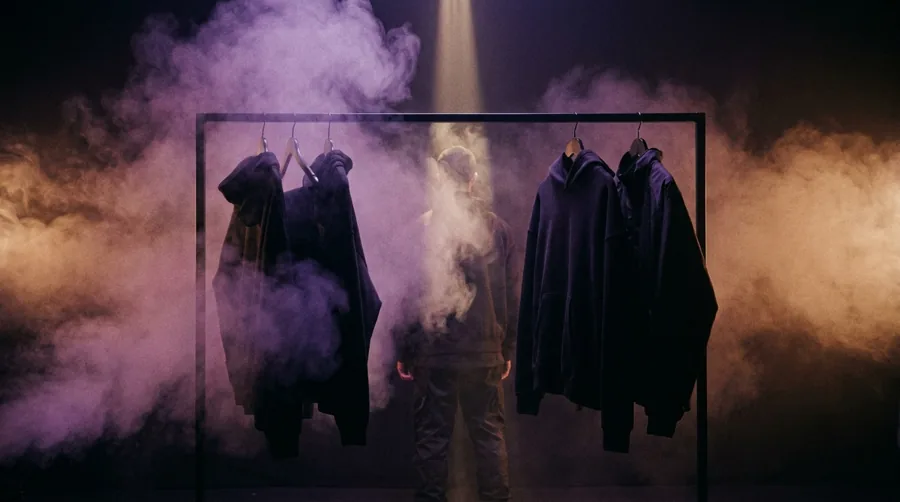

From Chicago
I came up through ops and sales. The curiosity was always technical.
Client operations, sales leadership, and support taught me to communicate under pressure, document clearly, and keep work moving when systems are messy.
The technical side has always been there too — rooting and jailbreaking phones since I was a kid, trying to understand what happens underneath the interface. Now I'm turning that into disciplined security work and tools people actually use.
Selected Work
A few things worth opening.
Hecz HQ
Security-minded workspace dashboard: tasks, chat, GitHub activity, integrations, and secrets visibility.

Cybersecurity Labs
School notes, defensive writeups, Linux & networking practice, and safe public documentation habits.
Toolkit
Practical stack.
TypeScript
React
Vite
Supabase
PostgreSQL
Edge Functions
Vercel
Linux
Networking
Security Labs